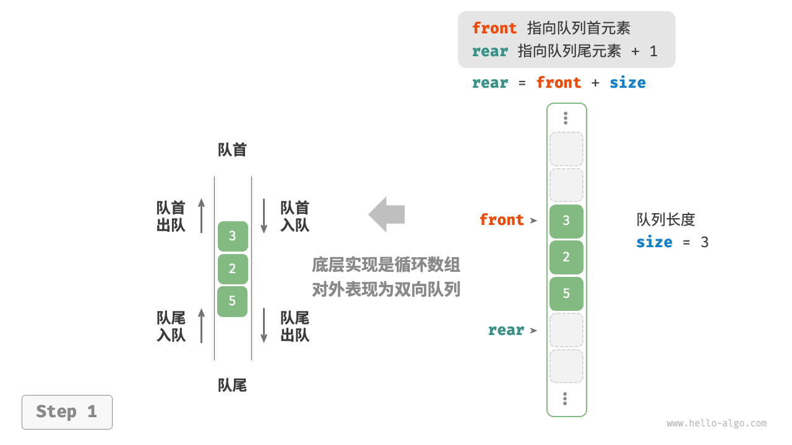

双向队列¶
在队列中，我们仅能删除头部元素或在尾部添加元素。如下图所示，双向队列（double-ended queue）提供了更高的灵活性，允许在头部和尾部执行元素的添加或删除操作。

双向队列常用操作¶
双向队列的常用操作如下表所示，具体的方法名称需要根据所使用的编程语言来确定。
表
| 方法名 | 描述 | 时间复杂度 |
|---|---|---|
push_first() |
将元素添加至队首 | $O(1)$ |
push_last() |
将元素添加至队尾 | $O(1)$ |
pop_first() |
删除队首元素 | $O(1)$ |
pop_last() |
删除队尾元素 | $O(1)$ |
peek_first() |
访问队首元素 | $O(1)$ |
peek_last() |
访问队尾元素 | $O(1)$ |
同样地，我们可以直接使用编程语言中已实现的双向队列类：
=== "Python"
```python title="deque.py"
from collections import deque
# 初始化双向队列
deq: deque[int] = deque()
# 元素入队
deq.append(2) # 添加至队尾
deq.append(5)
deq.append(4)
deq.appendleft(3) # 添加至队首
deq.appendleft(1)
# 访问元素
front: int = deq[0] # 队首元素
rear: int = deq[-1] # 队尾元素
# 元素出队
pop_front: int = deq.popleft() # 队首元素出队
pop_rear: int = deq.pop() # 队尾元素出队
# 获取双向队列的长度
size: int = len(deq)
# 判断双向队列是否为空
is_empty: bool = len(deq) == 0
```
=== "C++"
```cpp title="deque.cpp"
/* 初始化双向队列 */
deque<int> deque;
/* 元素入队 */
deque.push_back(2); // 添加至队尾
deque.push_back(5);
deque.push_back(4);
deque.push_front(3); // 添加至队首
deque.push_front(1);
/* 访问元素 */
int front = deque.front(); // 队首元素
int back = deque.back(); // 队尾元素
/* 元素出队 */
deque.pop_front(); // 队首元素出队
deque.pop_back(); // 队尾元素出队
/* 获取双向队列的长度 */
int size = deque.size();
/* 判断双向队列是否为空 */
bool empty = deque.empty();
```
=== "Java"
```java title="deque.java"
/* 初始化双向队列 */
Deque<Integer> deque = new LinkedList<>();
/* 元素入队 */
deque.offerLast(2); // 添加至队尾
deque.offerLast(5);
deque.offerLast(4);
deque.offerFirst(3); // 添加至队首
deque.offerFirst(1);
/* 访问元素 */
int peekFirst = deque.peekFirst(); // 队首元素
int peekLast = deque.peekLast(); // 队尾元素
/* 元素出队 */
int popFirst = deque.pollFirst(); // 队首元素出队
int popLast = deque.pollLast(); // 队尾元素出队
/* 获取双向队列的长度 */
int size = deque.size();
/* 判断双向队列是否为空 */
boolean isEmpty = deque.isEmpty();
```
=== "C#"
```csharp title="deque.cs"
/* 初始化双向队列 */
// 在 C# 中，将链表 LinkedList 看作双向队列来使用
LinkedList<int> deque = new();
/* 元素入队 */
deque.AddLast(2); // 添加至队尾
deque.AddLast(5);
deque.AddLast(4);
deque.AddFirst(3); // 添加至队首
deque.AddFirst(1);
/* 访问元素 */
int peekFirst = deque.First.Value; // 队首元素
int peekLast = deque.Last.Value; // 队尾元素
/* 元素出队 */
deque.RemoveFirst(); // 队首元素出队
deque.RemoveLast(); // 队尾元素出队
/* 获取双向队列的长度 */
int size = deque.Count;
/* 判断双向队列是否为空 */
bool isEmpty = deque.Count == 0;
```
=== "Go"
```go title="deque_test.go"
/* 初始化双向队列 */
// 在 Go 中，将 list 作为双向队列使用
deque := list.New()
/* 元素入队 */
deque.PushBack(2) // 添加至队尾
deque.PushBack(5)
deque.PushBack(4)
deque.PushFront(3) // 添加至队首
deque.PushFront(1)
/* 访问元素 */
front := deque.Front() // 队首元素
rear := deque.Back() // 队尾元素
/* 元素出队 */
deque.Remove(front) // 队首元素出队
deque.Remove(rear) // 队尾元素出队
/* 获取双向队列的长度 */
size := deque.Len()
/* 判断双向队列是否为空 */
isEmpty := deque.Len() == 0
```
=== "Swift"
```swift title="deque.swift"
/* 初始化双向队列 */
// Swift 没有内置的双向队列类，可以把 Array 当作双向队列来使用
var deque: [Int] = []
/* 元素入队 */
deque.append(2) // 添加至队尾
deque.append(5)
deque.append(4)
deque.insert(3, at: 0) // 添加至队首
deque.insert(1, at: 0)
/* 访问元素 */
let peekFirst = deque.first! // 队首元素
let peekLast = deque.last! // 队尾元素
/* 元素出队 */
// 使用 Array 模拟时 popFirst 的复杂度为 O(n)
let popFirst = deque.removeFirst() // 队首元素出队
let popLast = deque.removeLast() // 队尾元素出队
/* 获取双向队列的长度 */
let size = deque.count
/* 判断双向队列是否为空 */
let isEmpty = deque.isEmpty
```
=== "JS"
```javascript title="deque.js"
/* 初始化双向队列 */
// JavaScript 没有内置的双端队列，只能把 Array 当作双端队列来使用
const deque = [];
/* 元素入队 */
deque.push(2);
deque.push(5);
deque.push(4);
// 请注意，由于是数组，unshift() 方法的时间复杂度为 O(n)
deque.unshift(3);
deque.unshift(1);
/* 访问元素 */
const peekFirst = deque[0];
const peekLast = deque[deque.length - 1];
/* 元素出队 */
// 请注意，由于是数组，shift() 方法的时间复杂度为 O(n)
const popFront = deque.shift();
const popBack = deque.pop();
/* 获取双向队列的长度 */
const size = deque.length;
/* 判断双向队列是否为空 */
const isEmpty = size === 0;
```
=== "TS"
```typescript title="deque.ts"
/* 初始化双向队列 */
// TypeScript 没有内置的双端队列，只能把 Array 当作双端队列来使用
const deque: number[] = [];
/* 元素入队 */
deque.push(2);
deque.push(5);
deque.push(4);
// 请注意，由于是数组，unshift() 方法的时间复杂度为 O(n)
deque.unshift(3);
deque.unshift(1);
/* 访问元素 */
const peekFirst: number = deque[0];
const peekLast: number = deque[deque.length - 1];
/* 元素出队 */
// 请注意，由于是数组，shift() 方法的时间复杂度为 O(n)
const popFront: number = deque.shift() as number;
const popBack: number = deque.pop() as number;
/* 获取双向队列的长度 */
const size: number = deque.length;
/* 判断双向队列是否为空 */
const isEmpty: boolean = size === 0;
```
=== "Dart"
```dart title="deque.dart"
/* 初始化双向队列 */
// 在 Dart 中，Queue 被定义为双向队列
Queue<int> deque = Queue<int>();
/* 元素入队 */
deque.addLast(2); // 添加至队尾
deque.addLast(5);
deque.addLast(4);
deque.addFirst(3); // 添加至队首
deque.addFirst(1);
/* 访问元素 */
int peekFirst = deque.first; // 队首元素
int peekLast = deque.last; // 队尾元素
/* 元素出队 */
int popFirst = deque.removeFirst(); // 队首元素出队
int popLast = deque.removeLast(); // 队尾元素出队
/* 获取双向队列的长度 */
int size = deque.length;
/* 判断双向队列是否为空 */
bool isEmpty = deque.isEmpty;
```
=== "Rust"
```rust title="deque.rs"
/* 初始化双向队列 */
let mut deque: VecDeque<u32> = VecDeque::new();
/* 元素入队 */
deque.push_back(2); // 添加至队尾
deque.push_back(5);
deque.push_back(4);
deque.push_front(3); // 添加至队首
deque.push_front(1);
/* 访问元素 */
if let Some(front) = deque.front() { // 队首元素
}
if let Some(rear) = deque.back() { // 队尾元素
}
/* 元素出队 */
if let Some(pop_front) = deque.pop_front() { // 队首元素出队
}
if let Some(pop_rear) = deque.pop_back() { // 队尾元素出队
}
/* 获取双向队列的长度 */
let size = deque.len();
/* 判断双向队列是否为空 */
let is_empty = deque.is_empty();
```
=== "C"
```c title="deque.c"
// C 未提供内置双向队列
```
=== "Kotlin"
```kotlin title="deque.kt"
/* 初始化双向队列 */
val deque = LinkedList<Int>()
/* 元素入队 */
deque.offerLast(2) // 添加至队尾
deque.offerLast(5)
deque.offerLast(4)
deque.offerFirst(3) // 添加至队首
deque.offerFirst(1)
/* 访问元素 */
val peekFirst = deque.peekFirst() // 队首元素
val peekLast = deque.peekLast() // 队尾元素
/* 元素出队 */
val popFirst = deque.pollFirst() // 队首元素出队
val popLast = deque.pollLast() // 队尾元素出队
/* 获取双向队列的长度 */
val size = deque.size
/* 判断双向队列是否为空 */
val isEmpty = deque.isEmpty()
```
=== "Ruby"
```ruby title="deque.rb"
# 初始化双向队列
# Ruby 没有内直的双端队列，只能把 Array 当作双端队列来使用
deque = []
# 元素如队
deque << 2
deque << 5
deque << 4
# 请注意，由于是数组，Array#unshift 方法的时间复杂度为 O(n)
deque.unshift(3)
deque.unshift(1)
# 访问元素
peek_first = deque.first
peek_last = deque.last
# 元素出队
# 请注意，由于是数组， Array#shift 方法的时间复杂度为 O(n)
pop_front = deque.shift
pop_back = deque.pop
# 获取双向队列的长度
size = deque.length
# 判断双向队列是否为空
is_empty = size.zero?
```
=== "Zig"
```zig title="deque.zig"
```
可视化运行
https://pythontutor.com/render.html#code=from%20collections%20import%20deque%0A%0A%22%22%22Driver%20Code%22%22%22%0Aif%20__name__%20%3D%3D%20%22__main__%22%3A%0A%20%20%20%20%23%20%E5%88%9D%E5%A7%8B%E5%8C%96%E5%8F%8C%E5%90%91%E9%98%9F%E5%88%97%0A%20%20%20%20deq%20%3D%20deque%28%29%0A%0A%20%20%20%20%23%20%E5%85%83%E7%B4%A0%E5%85%A5%E9%98%9F%0A%20%20%20%20deq.append%282%29%20%20%23%20%E6%B7%BB%E5%8A%A0%E8%87%B3%E9%98%9F%E5%B0%BE%0A%20%20%20%20deq.append%285%29%0A%20%20%20%20deq.append%284%29%0A%20%20%20%20deq.appendleft%283%29%20%20%23%20%E6%B7%BB%E5%8A%A0%E8%87%B3%E9%98%9F%E9%A6%96%0A%20%20%20%20deq.appendleft%281%29%0A%20%20%20%20print%28%22%E5%8F%8C%E5%90%91%E9%98%9F%E5%88%97%20deque%20%3D%22,%20deq%29%0A%0A%20%20%20%20%23%20%E8%AE%BF%E9%97%AE%E5%85%83%E7%B4%A0%0A%20%20%20%20front%20%3D%20deq%5B0%5D%20%20%23%20%E9%98%9F%E9%A6%96%E5%85%83%E7%B4%A0%0A%20%20%20%20print%28%22%E9%98%9F%E9%A6%96%E5%85%83%E7%B4%A0%20front%20%3D%22,%20front%29%0A%20%20%20%20rear%20%3D%20deq%5B-1%5D%20%20%23%20%E9%98%9F%E5%B0%BE%E5%85%83%E7%B4%A0%0A%20%20%20%20print%28%22%E9%98%9F%E5%B0%BE%E5%85%83%E7%B4%A0%20rear%20%3D%22,%20rear%29%0A%0A%20%20%20%20%23%20%E5%85%83%E7%B4%A0%E5%87%BA%E9%98%9F%0A%20%20%20%20pop_front%20%3D%20deq.popleft%28%29%20%20%23%20%E9%98%9F%E9%A6%96%E5%85%83%E7%B4%A0%E5%87%BA%E9%98%9F%0A%20%20%20%20print%28%22%E9%98%9F%E9%A6%96%E5%87%BA%E9%98%9F%E5%85%83%E7%B4%A0%20%20pop_front%20%3D%22,%20pop_front%29%0A%20%20%20%20print%28%22%E9%98%9F%E9%A6%96%E5%87%BA%E9%98%9F%E5%90%8E%20deque%20%3D%22,%20deq%29%0A%20%20%20%20pop_rear%20%3D%20deq.pop%28%29%20%20%23%20%E9%98%9F%E5%B0%BE%E5%85%83%E7%B4%A0%E5%87%BA%E9%98%9F%0A%20%20%20%20print%28%22%E9%98%9F%E5%B0%BE%E5%87%BA%E9%98%9F%E5%85%83%E7%B4%A0%20%20pop_rear%20%3D%22,%20pop_rear%29%0A%20%20%20%20print%28%22%E9%98%9F%E5%B0%BE%E5%87%BA%E9%98%9F%E5%90%8E%20deque%20%3D%22,%20deq%29%0A%0A%20%20%20%20%23%20%E8%8E%B7%E5%8F%96%E5%8F%8C%E5%90%91%E9%98%9F%E5%88%97%E7%9A%84%E9%95%BF%E5%BA%A6%0A%20%20%20%20size%20%3D%20len%28deq%29%0A%20%20%20%20print%28%22%E5%8F%8C%E5%90%91%E9%98%9F%E5%88%97%E9%95%BF%E5%BA%A6%20size%20%3D%22,%20size%29%0A%0A%20%20%20%20%23%20%E5%88%A4%E6%96%AD%E5%8F%8C%E5%90%91%E9%98%9F%E5%88%97%E6%98%AF%E5%90%A6%E4%B8%BA%E7%A9%BA%0A%20%20%20%20is_empty%20%3D%20len%28deq%29%20%3D%3D%200%0A%20%20%20%20print%28%22%E5%8F%8C%E5%90%91%E9%98%9F%E5%88%97%E6%98%AF%E5%90%A6%E4%B8%BA%E7%A9%BA%20%3D%22,%20is_empty%29&cumulative=false&curInstr=3&heapPrimitives=nevernest&mode=display&origin=opt-frontend.js&py=311&rawInputLstJSON=%5B%5D&textReferences=false
双向队列实现 *¶
双向队列的实现与队列类似，可以选择链表或数组作为底层数据结构。
基于双向链表的实现¶
回顾上一节内容，我们使用普通单向链表来实现队列，因为它可以方便地删除头节点（对应出队操作）和在尾节点后添加新节点（对应入队操作）。
对于双向队列而言，头部和尾部都可以执行入队和出队操作。换句话说，双向队列需要实现另一个对称方向的操作。为此，我们采用“双向链表”作为双向队列的底层数据结构。
如下图所示，我们将双向链表的头节点和尾节点视为双向队列的队首和队尾，同时实现在两端添加和删除节点的功能。
{kind=link}
{kind=link}
{kind=link}
{kind=link}
{kind=link}
实现代码如下所示：
[file]{linkedlist_deque}-[class]{linked_list_deque}-[func]{}
基于数组的实现¶
如下图所示，与基于数组实现队列类似，我们也可以使用环形数组来实现双向队列。
=== "ArrayDeque" 
{kind=link}
{kind=link}
{kind=link}
{kind=link}
{kind=link}
在队列的实现基础上，仅需增加“队首入队”和“队尾出队”的方法：
[file]{array_deque}-[class]{array_deque}-[func]{}
双向队列应用¶
双向队列兼具栈与队列的逻辑，因此它可以实现这两者的所有应用场景，同时提供更高的自由度。
我们知道，软件的“撤销”功能通常使用栈来实现：系统将每次更改操作 push 到栈中，然后通过 pop 实现撤销。然而，考虑到系统资源的限制，软件通常会限制撤销的步数（例如仅允许保存 $50$ 步）。当栈的长度超过 $50$ 时，软件需要在栈底（队首）执行删除操作。但栈无法实现该功能，此时就需要使用双向队列来替代栈。请注意，“撤销”的核心逻辑仍然遵循栈的先入后出原则，只是双向队列能够更加灵活地实现一些额外逻辑。